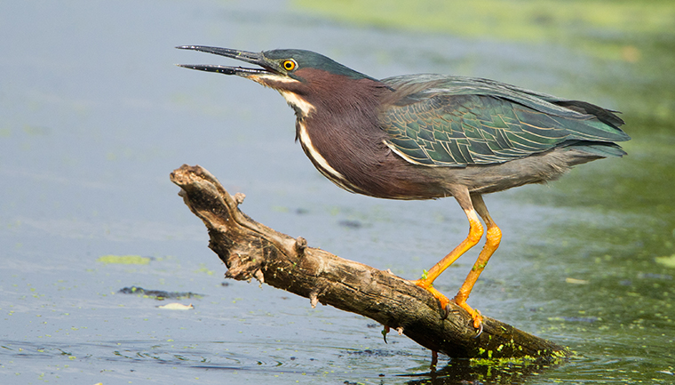

Audubon API¶
Author's Note
Below is documentation for an API I conceived based on my personal experience and passion in wildlife biology. The project showcases design principles about certain parameters, explains best practices for querying the API, and includes specific use cases as demonstrations. If the concept interests you, there is a more user-friendly app for this purpose called Merlin Bird ID on your phone.
Audubon API is a conservation tool to catalog all sightings of wild bird species. It allows users to record details about a species including its physical descriptors, endangered status, and when it was last sighted. It also allows users to retrieve existing information for species logged by themselves or other users.
Path Parameters¶
| Name | Type | Description |
|---|---|---|
name |
string | Full common name of the species written in longhand (e.g., “Northern Cardinal”). |
color |
string | Basic color(s) typically visible on the species. Supports comma-separated list for multiple colors (e.g., red,brown). See Colors for a full list of accepted color values. |
endangered |
boolean | Indicates whether the species is listed as endangered (true or false). Birds with a value of endangered=true should meet the IUCN's definition of vulnerable or a more severe categorization. |
size |
string | General size category of the species. Accepts: tiny, small, medium, or large. See Estimating Size for a better understanding of how to use this parameter. |
migratory |
boolean | Indicates whether the species participates in seasonal migration. |
lastSpotted |
string | Indicates the last time the species was spotted and catalogued by a user. Only accepts dates formatted as MM-DD-YY. |
Colors¶
Birds come in all different colors, and so the color parameter should be flexible to support multiple values for individual species. To add or query by multiple color values, use a comma-separated list (e.g. red,white,black).
Supported values for color include: white, black, red, orange, yellow, green, blue, indigo, violet, brown, pink, and gray.
When calling the API by providing multiple color values, the API will only return logged species whose colors include the full list, not an individual color from the list. Use the color parameter only as restrictively as you need to. Additionally, as a best practice, avoid logging a new species with more than 2 colors to ensure it can be readily retrieved later.
Estimating Size¶
Without strict numerical boundaries, size is arguably subjective. However, there are key species comparisons (commonly observed birds you should already be familiar with) that serve as benchmarks for each size value. This allows users to remain consistent when providing these values across many species:
tiny: For birds close in size to a sparrow, or smaller.small: For birds close in size to a robin.medium: For birds close in size to a raven.large: For birds close in size to a goose, or larger.
Usage¶
Logging a New Entry¶
It is recommended to provide a correct value for every single query parameter when a species is logged for the first time. If you are unsure if a species has been logged or not, you can first query by its full common name to see if an entry has been created.
Example: Logging the American Robin into Audubon API for the first time:¶
curl -X POST "http://localhost:8080/audubon?name=American%20Robin&color=orange,gray,white&endangered=false&size=small&migratory=true&lastSpotted=11-22-25"
After logging a new species, we will receive an output that confirms all details about the new species were ingested successfully. An id value for that entry will also be created:
{
"status": "success",
"message": "Species successfully logged",
"data": {
"id": "a3f7c891-4d2e-4b3a-9f81-2c5e8b7d4a19",
"name": "American Robin",
"color": ["orange", "gray", "white"],
"endangered": false,
"size": "small",
"migratory": true,
"lastSpotted": "11-22-25",
"createdAt": "2025-11-23T14:32:18Z"
}
}
Filtering for Species by Parameter(s)¶
When performing a GET request, you can include one or multiple query parameters to list all relevant logged species. This can be useful to identify a particular species by the provided physical descriptors, such as size and color.
Example: Querying for all yellow birds¶
We want to query the API for a list of all yellow birds. In this case, we only need to specify the color value.
The example output returns only three species, but you may see more, fewer, or different species altogether based on which species a user has logged.
{
"status": "success",
"message": "3 species retrieved successfully",
"data": [
{
"id": "b8e2d4c3-7a1f-4e9b-8c3d-5f6a9b2e1d4c",
"name": "American Goldfinch",
"color": ["yellow", "black"],
"endangered": false,
"size": "tiny",
"migratory": true,
"lastSpotted": "11-18-25",
"createdAt": "2025-11-15T09:22:41Z"
},
{
"id": "c9f3e5d4-8b2g-5f0c-9d4e-6g7b0c3f2e5d",
"name": "Yellow Warbler",
"color": ["yellow", "green"],
"endangered": false,
"size": "tiny",
"migratory": true,
"lastSpotted": "10-05-25",
"createdAt": "2025-10-05T16:47:33Z"
},
{
"id": "d0g4f6e5-9c3h-6g1d-0e5f-7h8c1d4g3f6e",
"name": "Western Meadowlark",
"color": ["yellow", "brown"],
"endangered": false,
"size": "small",
"migratory": true,
"lastSpotted": "11-20-25",
"createdAt": "2025-11-12T11:03:29Z"
}
]
}
Example: Use the Audubon API to identify a recently spotted bird species¶
For this use case, we will use this commonly sighted water bird. You may already know its common full name, but if not, let's see if the Audubon API can help us out. The intent is to retrieve logs from other users in hopes we can deduce the correct species.

From this bird's appearance, and from multiple encounters with this species, we can already provide multiple parameter values to help us out:
- We know the predominant colors are green and brown.
- We know the bird is closer in size to a raven than a robin or a goose.
- We have seen the bird multiple times, indicating it is likely not endangered.
With these details, we can call the Audubon API as such:
{
"status": "success",
"message": "3 species retrieved successfully",
"data": [
{
"id": "e1h5g7f6-0d4i-7h2e-1f6g-8i9d2e5h4g7f",
"name": "Green Heron",
"color": ["green", "brown"],
"endangered": false,
"size": "medium",
"migratory": true,
"lastSpotted": "09-14-25",
"createdAt": "2025-09-14T13:28:17Z"
},
{
"id": "f2i6h8g7-1e5j-8i3f-2g7h-9j0e3f6i5h8g",
"name": "Mallard",
"color": ["green", "brown", "white"],
"endangered": false,
"size": "medium",
"migratory": true,
"lastSpotted": "11-21-25",
"createdAt": "2025-11-10T08:15:42Z"
},
{
"id": "g3j7i9h8-2f6k-9j4g-3h8i-0k1f4g7j6i9h",
"name": "Wood Duck",
"color": ["green", "brown"],
"endangered": false,
"size": "medium",
"migratory": true,
"lastSpotted": "10-30-25",
"createdAt": "2025-10-28T14:52:09Z"
}
]
}
The Audubon API returns three species: Green Heron, Mallard, and Wood Duck. Two of these species are ducks, and one is a heron. From the image, we can safely determine the pictured species is not a duck. Therefore, we conclude the species must be a green heron (and we'd be correct!).
Filtering for Individual Species¶
Because each logged species will have a unique name value (whereas all other parameters can be shared by multiple species), you should filter for an individual species by querying by its full common name.
Since we have already logged the American Robin, let's check that it still exists:
curl -X GET "http://localhost:8080/audubon?name=American%20Robin"
{
"status": "success",
"message": "Species retrieved successfully",
"data": {
"id": "a3f7c891-4d2e-4b3a-9f81-2c5e8b7d4a19",
"name": "American Robin",
"color": ["orange", "gray", "white"],
"endangered": false,
"size": "small",
"migratory": true,
"lastSpotted": "11-22-25",
"createdAt": "2025-11-23T14:32:18Z"
}
}
Of course, each species has a unique id value that is created after being successfully logged, and therefore can be uniquely retrieved by calling the API with that value. That being said, the bird's common name may be easier to remember than a long string of digits.
Updating Logged Species with Recent Sighting¶
Suppose we have recently spotted an endangered species, in this example a piping plover. The species has already been logged with the Audubon API, but now we want to update the lastSpotted value with a more recent date.
curl -X PATCH "http://localhost:8080/audubon?name=Piping%20Plover" \
-H "Content-Type: application/json" \
-d '{"lastSpotted": "11-23-25"}'
The species log will update only the lastSpotted value, while immutable qualities like color and size are unaffected.
{
"status": "success",
"message": "Species updated successfully",
"data": {
"id": "h4k8j0i9-3g7l-0k5h-4i9j-1l2g5h8k7j0i",
"name": "Piping Plover",
"color": ["white", "gray"],
"endangered": true,
"size": "tiny",
"migratory": true,
"lastSpotted": "11-23-25",
"createdAt": "2025-08-12T10:34:56Z",
"updatedAt": "2025-11-23T15:42:31Z"
}
}